03. Advanced Agent — Context Engineering · Guardrails · Memory
이 자료는 langchain/03 폴더의 실습 노트북들을 열기 전에 먼저 읽는 강의 교재입니다.
Agent를 프로덕션 수준으로 끌어올리는 데 필요한 세 가지 축 —
Runtime · State로 정교하게 제어하는 Advanced Agent, 입출력을 검증하는 Guardrails,
대화가 끝나도 살아남는 Long-term Memory — 를 비유와 코드로 차근차근 풀어봅니다.
| 장 | 주요 내용 |
|---|---|
| 1장 Advanced Agent | Runtime & State · Custom Middleware |
| 2장 Guardrails | Built-in Guardrails · Custom Guardrails |
| 3장 Memory | Long-term Memory |
▲ 이번 장 전체 지도 — Advanced Agent · Guardrails · Memory 세 축을 순서대로 다룹니다.
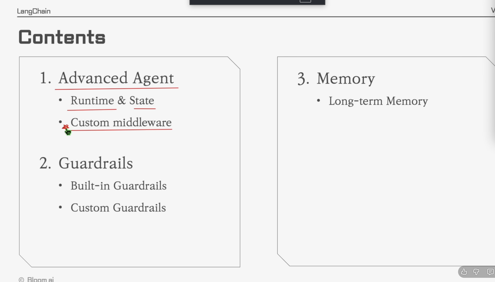
1장. Advanced Agent
1장에서는 Agent를 더 정교하게 제어하기 위한 두 가지 뼈대 — Context Engineering이라는 관점과, 그것을 코드로 구현하는 Runtime & State · Custom Middleware — 를 다룹니다.
1.1 Context Engineering
▲ "프롬프트 엔지니어링"에서 "컨텍스트 엔지니어링"으로 무게중심이 옮겨가고 있음을 보여주는 슬라이드.
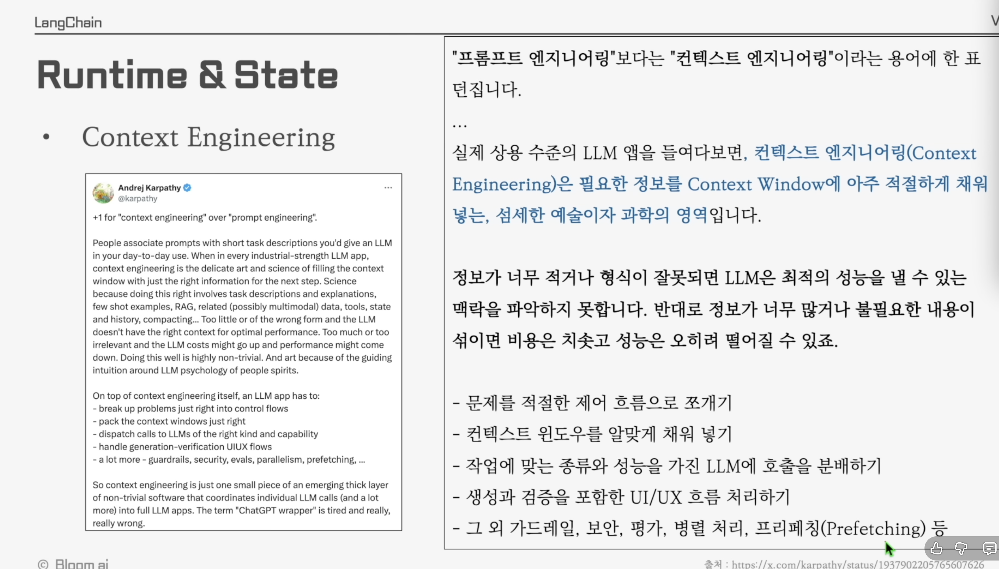
"프롬프트 엔지니어링"보다 "컨텍스트 엔지니어링"이라는 용어가 더 중요해지고 있습니다.
- 정보가 너무 적거나 형식이 잘못되면 LLM은 최적의 성능을 낼 수 없습니다.
- 반대로 정보가 너무 많거나 불필요한 내용이 가득하면 비용은 증가하고 성능은 오히려 떨어질 수 있습니다.
1.2 Runtime & State
▲ Advanced Agent를 구현하기 위한 두 핵심 축, Runtime과 State.
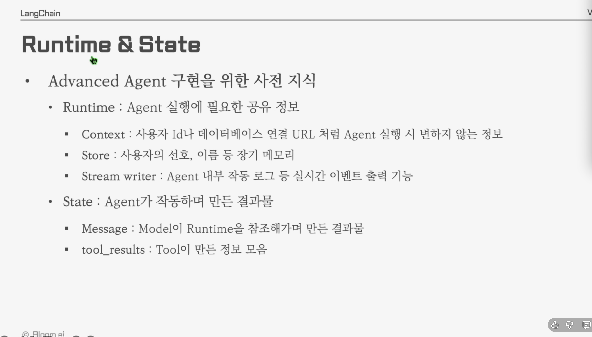
Advanced Agent를 구현하기 위한 핵심 개념 두 가지입니다.
Runtime — Agent 실행에 필요한 공유 정보
| 구성 요소 | 설명 | 역할 |
|---|---|---|
| Context | 사용자 Id나 DB 연결 URL처럼 Agent 실행 시 변하지 않는 정보 | 보안 및 권한 제어 |
| Store | 사용자의 선호도, 이름 등 장기 메모리 | 개인화 및 제어 |
| Stream writer | Agent 내부 작동 로그 등 실시간 이벤트 출력 기능 | 모니터링 |
State — Agent가 작동하며 만든 결과물
| 구성 요소 | 설명 | 역할 |
|---|---|---|
| Message | Model이 Runtime을 참조해가며 만든 결과물 | 대화 흐름 제어 |
| tool_results | Tool이 만든 정보 모음 | 도구 실행 결과 |
▲ State가 대화·도구 결과라면, Runtime은 그 바깥의 실행 환경입니다.
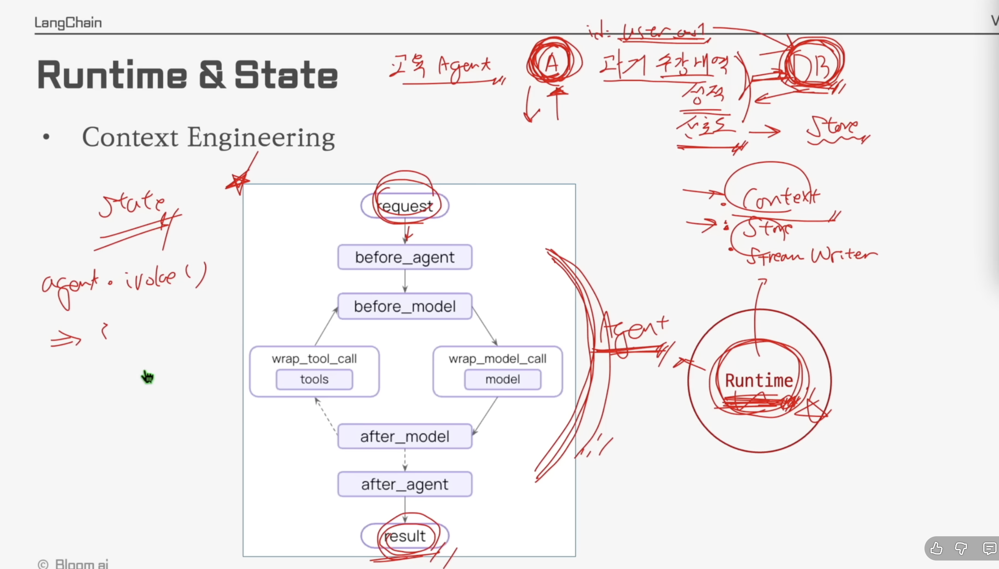
1.3 dataclass — Context 클래스 작성 도구
▲ Context를 정의할 때 사용하는 Python 표준 도구, dataclass.
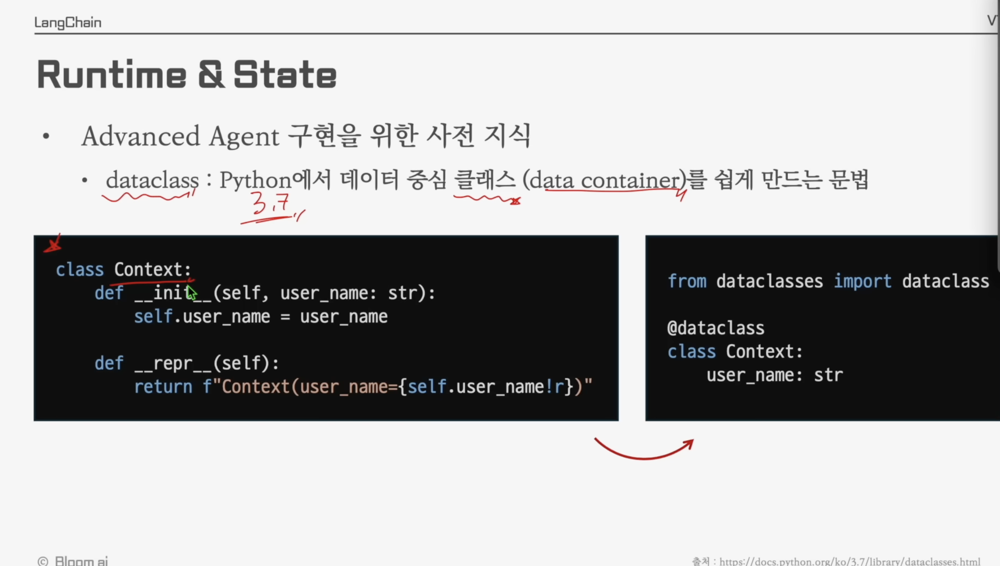
dataclass는 Python에서 데이터 중심 클래스(data container)를 쉽게 만드는 문법입니다. (Python 3.7+ 내장)
일반 클래스를 만들 때 반복적으로 작성해야 하는 __init__, __repr__ 등의 메서드를
@dataclass 데코레이터 하나로 자동 생성해 줍니다.
▲ @dataclass가 자동으로 만들어주는 메서드들.
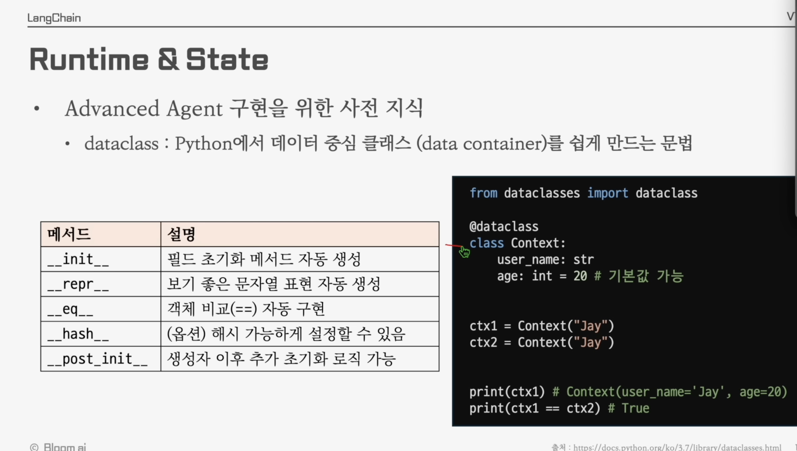
| 메서드 | 설명 |
|---|---|
__init__ | 필드 초기화 메서드 자동 생성 |
__repr__ | 보기 좋은 문자열 표현 자동 생성 |
__eq__ | 객체 비교(==) 자동 구현 |
__hash__ | (옵션) 해시 가능하게 설정 가능 |
__post_init__ | 생성자 이후 추가 초기화 로직 가능 |
__init__)", "예쁘게 출력하는 법(__repr__)",
"두 개가 같은지 비교하는 법(__eq__)"을 매번 손으로 적어야 합니다.
@dataclass는 "어떤 칸이 필요한지"만 적으면 나머지 지루한 서식을 자동으로 채워 주는
문서 자동 완성기입니다. 우리는 user_name: str 한 줄만 쓰면, 파이썬이 "아, 이건
user_name을 받는 생성자가 필요하겠구나" 하고 알아서 만들어 줍니다.
from dataclasses import dataclass
@dataclass
class Context:
user_name: str
age: int = 20 # 기본값 가능
ctx1 = Context("Jay")
ctx2 = Context("Jay")
print(ctx1) # Context(user_name='Jay', age=20)
print(ctx1 == ctx2) # True1.4 Middleware에서 Runtime 접근하기 — 방법 1: Node-style
▲ create_agent에 context_schema를 전달하면 Middleware가 runtime을 통해 Context에 접근할 수 있습니다.
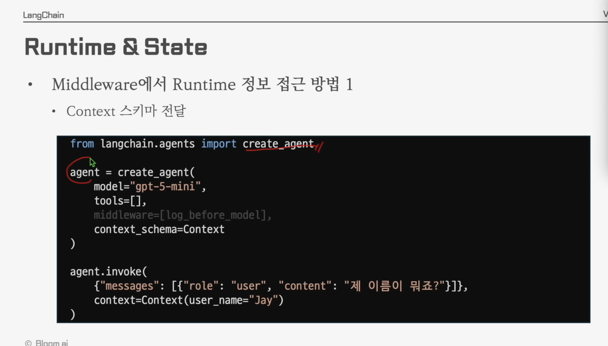
create_agent에 context_schema=Context를 전달하면 Middleware 함수가
runtime을 통해 Context 정보에 접근할 수 있습니다.
from langchain.agents import create_agent
from dataclasses import dataclass
@dataclass
class Context:
user_name: str
agent = create_agent(
model="gpt-5-mini",
tools=[],
middleware=[log_before_model],
context_schema=Context, # Context 스키마 전달
)
agent.invoke(
{"messages": [{"role": "user", "content": "제 이름이 뭐죠?"}]},
context=Context(user_name="Jay"), # 호출 시 Context 인스턴스 주입
)▲ Agent 실행 시 invoke의 context 인자로 Context 인스턴스가 주입되는 흐름.
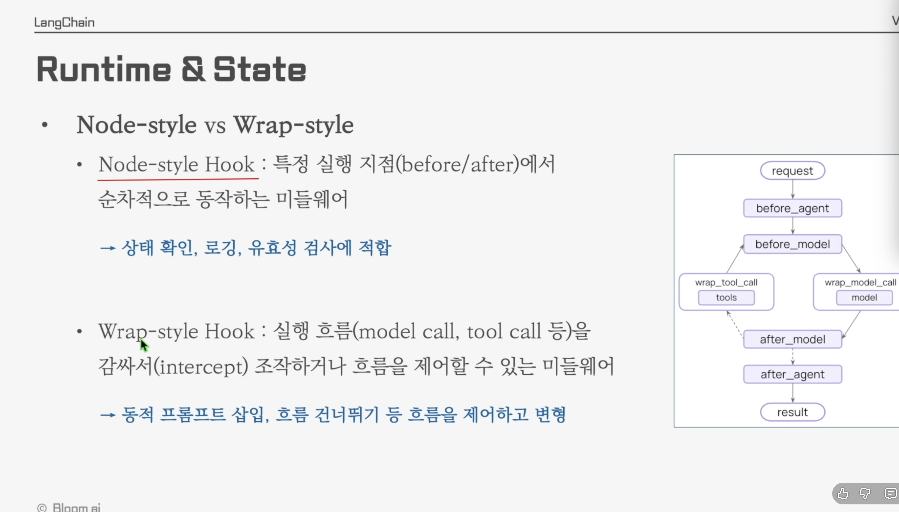
Node-style vs Wrap-style Hook 비교
| 구분 | Node-style Hook | Wrap-style Hook |
|---|---|---|
| 동작 방식 | 특정 실행 지점(before/after)에서 순차적으로 동작 | 실행 흐름(model call, tool call 등)을 감싸서(intercept) 조작 |
| 입력 파라미터 | state, runtime | request, handler |
| 적합한 용도 | 상태 확인, 로깅, 유효성 검사 | 동적 프롬프트 삽입, 흐름 건너뛰기 등 흐름 제어 및 변형 |
| 데코레이터 | @before_agent, @before_model, @after_model, @after_agent | @wrap_model_call, @wrap_tool_call |
▲ Node-style 훅이 실제로 코드에서 어떻게 정의되는지 보여주는 슬라이드.
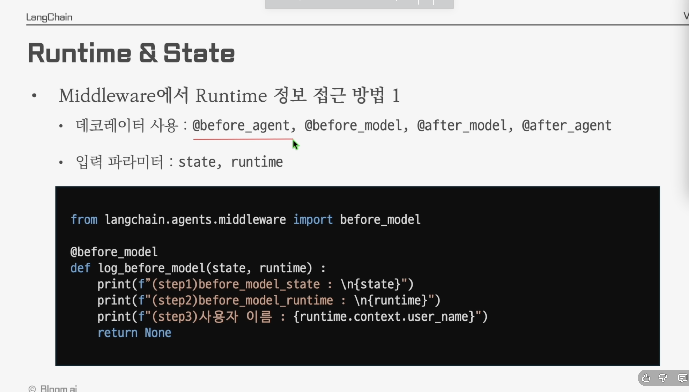
Node-style 예시 — @before_model 데코레이터 사용:
from langchain.agents.middleware import before_model
@before_model
def log_before_model(state, runtime):
print(f"(step1)before_model_state : \n{state}")
print(f"(step2)before_model_runtime : \n{runtime}")
print(f"(step3)사용자 이름 : {runtime.context.user_name}")
return None@before_model은 Model이 호출될 때마다 실행됩니다. (Tool 호출 → Model 재호출
시에도 반복 실행) 반면 @before_agent는 Agent 실행 시 딱 한 번만 실행됩니다.
1.5 Middleware에서 Runtime 접근하기 — 방법 2: Wrap-style
▲ Wrap-style은 model·tool 호출 자체를 가로채 조작하는 방식입니다.
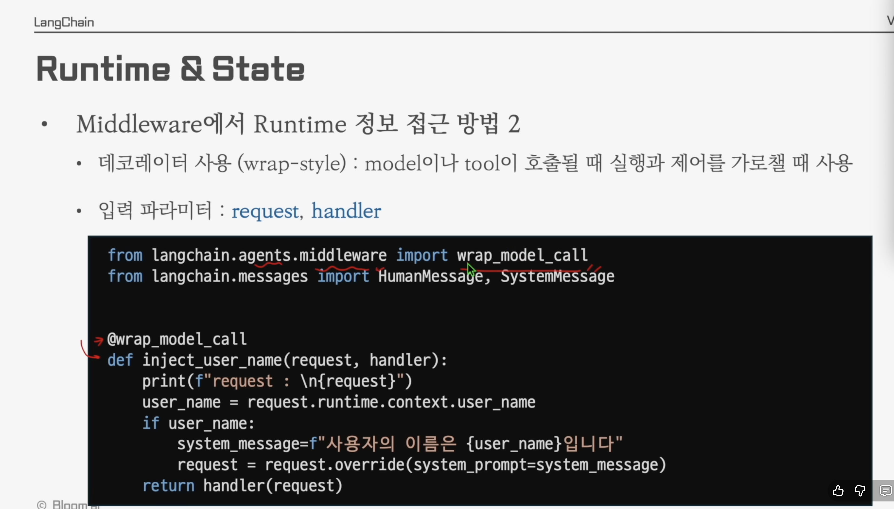
Wrap-style은 model이나 tool이 호출될 때 실행과 제어를 가로채는(intercept)
방식입니다. 입력 파라미터는 request(요청 객체)와 handler(실제 실행 함수)입니다.
request)을 손에 쥐고, 라벨을 바꿔 붙이거나(변형) · 아예 기계를
거치지 않고 되돌려 보내거나(건너뛰기) · 실패하면 몇 번이고 다시 밀어 넣을(재시도) 수 있습니다.
"실제로 기계를 돌려라"라고 버튼을 눌러 주는 행위가 handler(request)입니다.
▲ request와 handler, 두 파라미터로 이루어지는 Wrap-style의 구조.
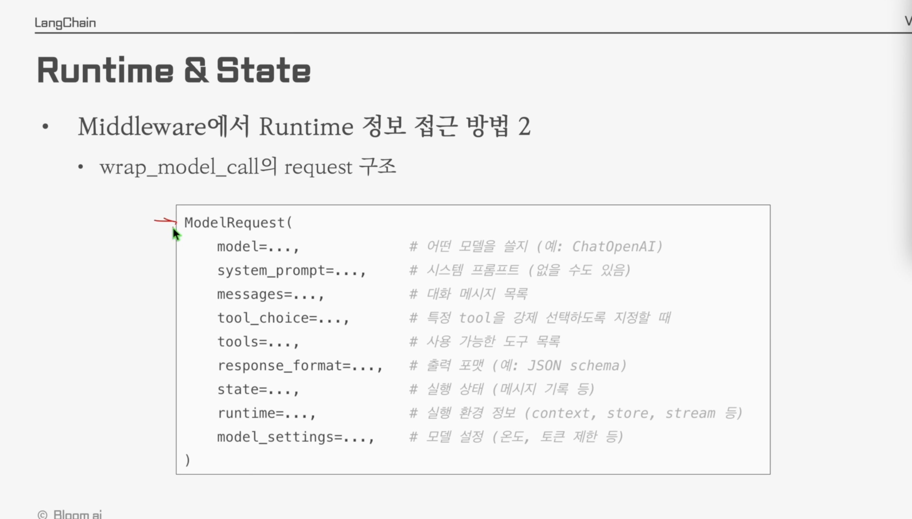
ModelRequest 구조
ModelRequest(
model=..., # 어떤 모델을 쓸지 (예: ChatOpenAI)
system_prompt=..., # 시스템 프롬프트 (없을 수도 있음)
messages=..., # 대화 메시지 목록
tool_choice=..., # 특정 tool을 강제 선택하도록 지정할 때
tools=..., # 사용 가능한 도구 목록
response_format=..., # 출력 포맷 (예: JSON schema)
state=..., # 실행 상태 (메시지 기록 등)
runtime=..., # 실행 환경 정보 (context, store, stream 등)
model_settings=..., # 모델 설정 (온도, 토큰 제한 등)
)▲ ModelRequest 안에 모델 호출에 필요한 모든 정보가 한 보따리로 담겨 있습니다.
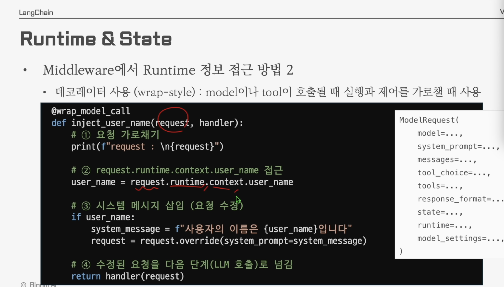
Wrap-style 예시 — @wrap_model_call로 사용자 이름을 시스템 메시지에 동적 삽입:
from langchain.agents.middleware import wrap_model_call
from langchain.messages import SystemMessage
@wrap_model_call
def inject_user_name(request, handler):
# ① 요청 가로채기
print(f"request : \n{request}")
# ② request.runtime.context.user_name 접근
user_name = request.runtime.context.user_name
# ③ 시스템 메시지 삽입 (요청 수정)
if user_name:
system_message = f"사용자의 이름은 {user_name}입니다"
request = request.override(system_prompt=system_message)
# ④ 수정된 요청을 다음 단계(LLM 호출)로 넘김
return handler(request)request는 모델에게 전달할 정보가 다 든 보따리입니다. 이 보따리 안
책상(runtime) 위에 놓인 신분증(context.user_name)을
꺼내, "사용자의 이름은 Jay입니다"라는 쪽지(시스템 프롬프트)로 만들어 보따리에
다시 넣어 모델에게 건넵니다. Node-style이 신분증을 힐끗 보고 노트에만 적었다면, Wrap-style은
그 정보를 모델 입에 직접 떠먹여 주는 셈입니다.
▲ 사용자 이름이 시스템 프롬프트에 삽입된 뒤 모델이 응답하는 흐름.
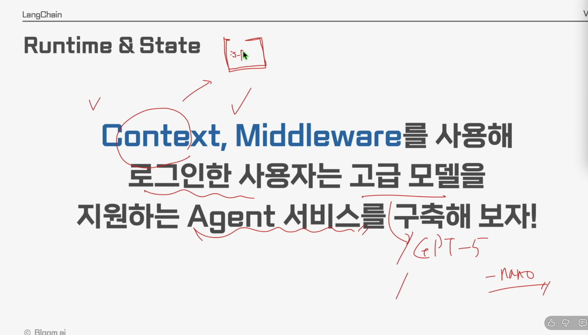
1.6 Custom Middleware — Node-style 심화
▲ before_agent와 before_model의 실행 시점·횟수 차이를 짚고 넘어갑니다.
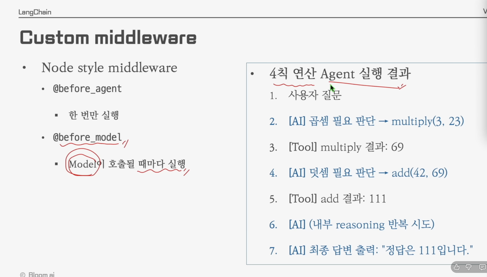
@before_agent vs @before_model 실행 횟수
@before_agent: Agent 전체 실행에서 딱 한 번 실행@before_model: Model이 호출될 때마다 실행 (Tool 결과를 받은 후 재호출 시에도)
@before_agent는 놀이공원 정문의 입장 검표입니다. 공원에 들어올 때
딱 한 번 표를 확인하죠. 반면 @before_model은 각 놀이기구 앞에 선
안전요원입니다. 롤러코스터를 탈 때도, 회전목마를 탈 때도 탈 때마다 키와 안전벨트를
확인합니다. Agent가 도구를 쓴 뒤 모델을 다시 부르면, @before_model은 그때도 또
실행돼요.
@before_agent + can_jump_to 예시 — 암구호 감지 후 응답 차단:
from langchain.agents.middleware import before_agent
from langchain.messages import AIMessage
@before_agent(can_jump_to=["end"])
def validate_input(state: AgentState, runtime):
last_message = state["messages"][-1]
if "암구호" in last_message.content:
print("암구호 감지됨 - 응답 차단")
return {
"messages": [AIMessage(content="이 요청은 처리할 수 없습니다.")],
"jump_to": "end" # 모델 호출 없이 바로 에이전트 종료
}
print("✅ 정상 입력, 모델 호출 계속 진행")
return Nonecan_jump_to=["end"]
예요. 그렇게 등록해 둔 초소만이, 실제 상황에서 버튼을 누를(=jump_to를 반환할)
수 있습니다. 권한 선언 없이 버튼부터 누르면 시스템이 막습니다.
▲ jump_to로 모델 호출을 건너뛰고 바로 종료하는 흐름.
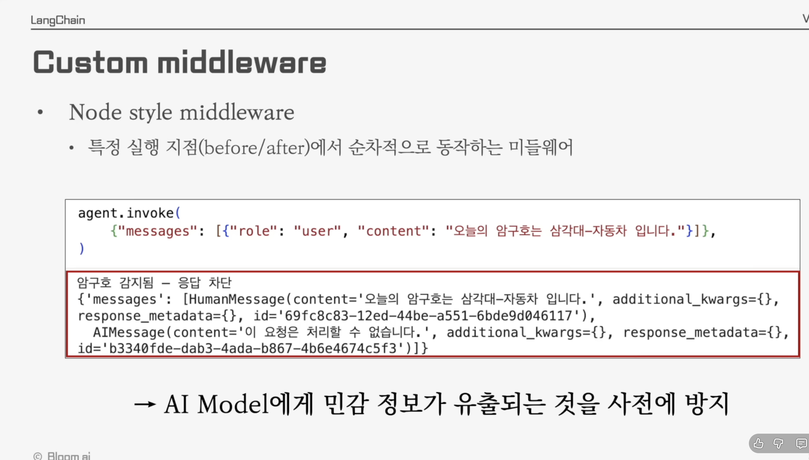
return None은 "점프하지 않고 평소대로 다음 단계를 진행하라"는 신호입니다. 반면
jump_to: "end"를 반환하면 모델 호출 없이 Agent가 종료됩니다. → AI Model에게 민감
정보가 유출되는 것을 사전에 방지할 수 있습니다.
1.7 Custom Middleware — Wrap-style 심화
▲ 메시지 길이에 따라 모델을 동적으로 바꿔 배차하는 Wrap-style 예시.
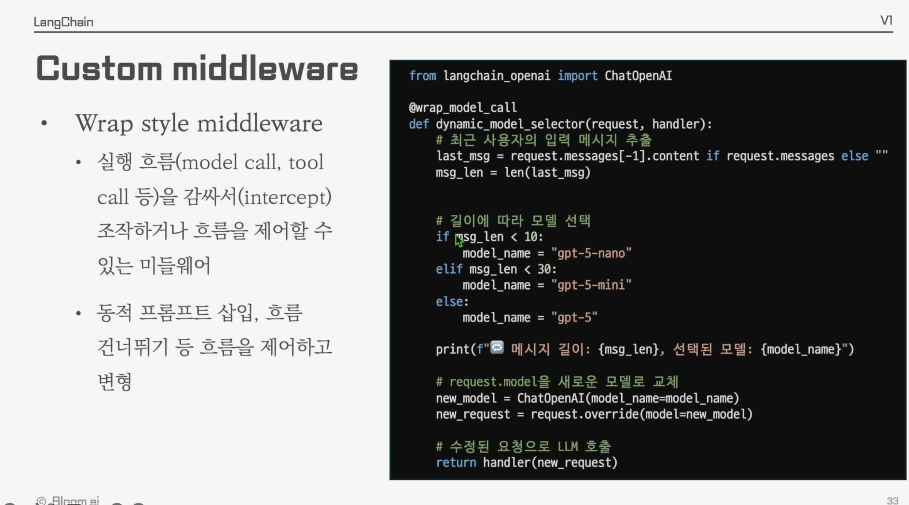
Wrap-style 예시 — 메시지 길이에 따른 동적 모델 선택:
from langchain_openai import ChatOpenAI
@wrap_model_call
def dynamic_model_selector(request, handler):
# 최근 사용자 입력 메시지 추출
last_msg = request.messages[-1].content if request.messages else ""
msg_len = len(last_msg)
# 길이에 따라 모델 선택
if msg_len < 10:
model_name = "gpt-5-nano"
elif msg_len < 30:
model_name = "gpt-5-mini"
else:
model_name = "gpt-5"
print(f"메시지 길이: {msg_len}, 선택된 모델: {model_name}")
# request.model을 새로운 모델로 교체
new_model = ChatOpenAI(model_name=model_name)
new_request = request.override(model=new_model)
# 수정된 요청으로 LLM 호출
return handler(new_request)gpt-5-nano),
중간 소포엔 승합차(gpt-5-mini), 대형 이삿짐엔 5톤 트럭
(gpt-5)을 배차하죠. 큰 짐에 오토바이를 보내면 다 못 싣고, 편지 한 통에 5톤 트럭을 보내면
기름값만 아깝습니다. 우리 미들웨어는 질문의 "무게(길이)"를 저울에 달아 알맞은 차량(모델)을 배차하는
물류 담당자입니다.
2장. Guardrails
▲ 책임 있고 신뢰할 수 있는 AI 애플리케이션을 위한 Guardrail.
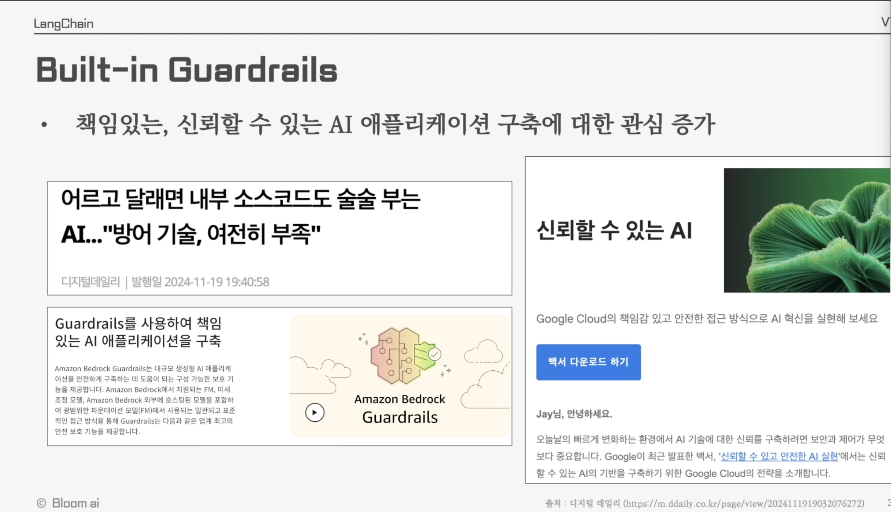
책임 있고 신뢰할 수 있는 AI 애플리케이션 구축에 대한 관심이 증가하면서, Guardrail은 프로덕션 Agent의 필수 요소가 되었습니다.
2.1 Built-in Guardrails
▲ LangChain이 지원하는 내장 가드레일 목록.
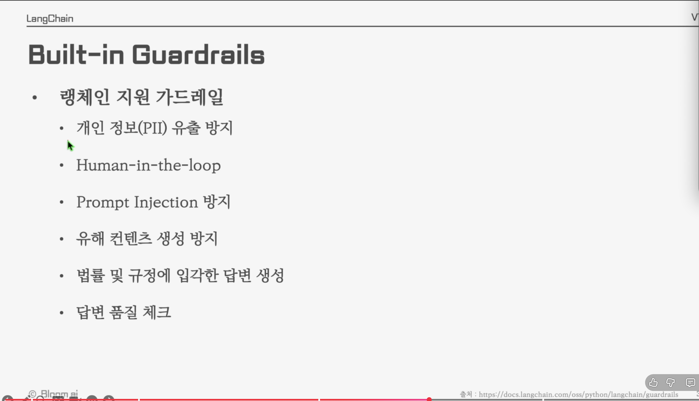
LangChain이 지원하는 내장 가드레일 목록입니다.
| 가드레일 | 설명 |
|---|---|
| 개인정보(PII) 유출 방지 | 이메일, 카드번호, IP 등 개인정보 탐지·마스킹 |
| Human-in-the-loop | 위험 작업 전 사용자 승인 요청 |
| Prompt Injection 방지 | 악의적인 프롬프트 조작 탐지 |
| 유해 컨텐츠 생성 방지 | 폭력, 성인물 등 유해 내용 생성 차단 |
| 법률 및 규정에 입각한 답변 생성 | 특정 도메인 규정 준수 |
| 답변 품질 체크 | 할루시네이션, 부적절한 답변 검증 |
▲ 구현 방식은 크게 결정론적 방식과 모델 기반 방식으로 나뉩니다.
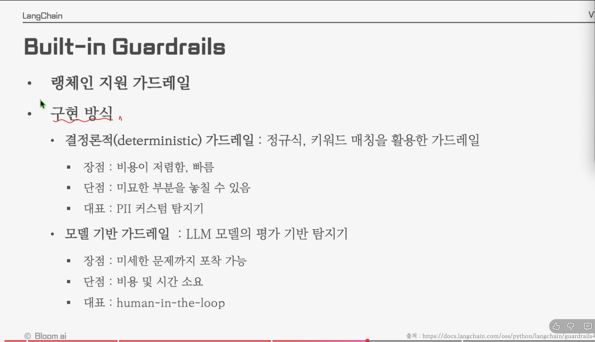
구현 방식 — 결정론적 vs 모델 기반
| 방식 | 설명 | 장점 | 단점 | 대표 예시 |
|---|---|---|---|---|
| 결정론적(Deterministic) | 정규식, 키워드 매칭 활용 | 비용 저렴, 빠름 | 미묘한 부분을 놓칠 수 있음 | PII 커스텀 탐지기 |
| 모델 기반 | LLM 모델의 평가 기반 탐지 | 미세한 문제까지 포착 가능 | 비용 및 시간 소요 | Human-in-the-loop |
2.2 Custom Guardrails
▲ Middleware를 이용해 Agent 흐름 앞뒤에 검증 로직을 직접 추가하는 Custom Guardrails.
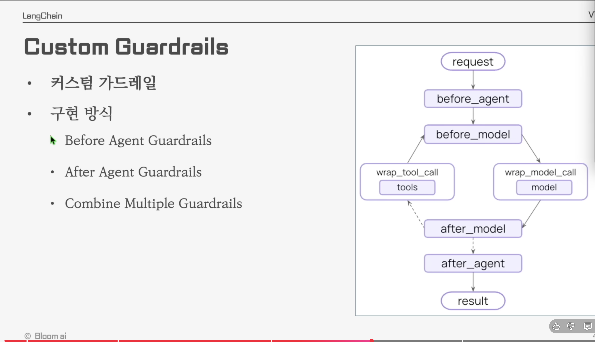
커스텀 가드레일은 Middleware를 이용해 Agent 흐름의 앞·뒤에 검증 로직을 직접 추가합니다.
| 방식 | 설명 |
|---|---|
| Before Agent Guardrails | 사용자 입력이 LLM에 도달하기 전 필터링 |
| After Agent Guardrails | LLM이 답변을 생성한 직후 (사용자에게 보이기 전) 검증 |
| Combine Multiple Guardrails | 여러 가드레일을 레이어로 쌓아 방어 |
2.2.1 Before Agent Guardrails — 입력 필터
▲ 차단할 키워드를 사전에 정의합니다.
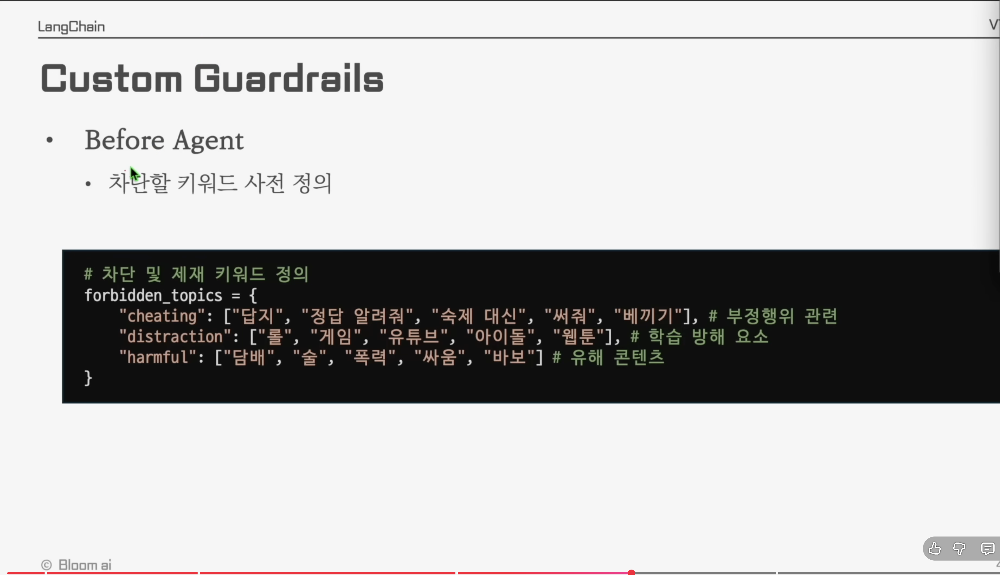
차단할 키워드를 사전에 정의합니다.
# 차단 및 제재 키워드 정의
forbidden_topics = {
"cheating": ["답지", "정답 알려줘", "숙제 대신", "써줘", "베끼기"], # 부정행위 관련
"distraction": ["롤", "게임", "유튜브", "아이돌", "웹툰"], # 학습 방해 요소
"harmful": ["담배", "술", "폭력", "싸움", "바보"], # 유해 콘텐츠
}▲ before_agent 미들웨어에서 키워드를 검사해 차단합니다.
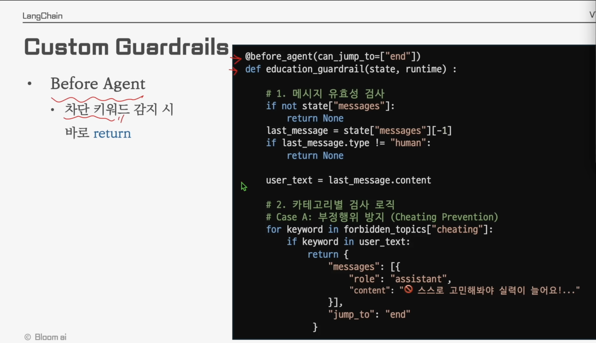
from langchain.agents.middleware import before_agent
from langchain.messages import AIMessage
@before_agent(can_jump_to=["end"])
def education_guardrail(state, runtime):
# 1. 메시지 유효성 검사
if not state["messages"]:
return None
last_message = state["messages"][-1]
if last_message.type != "human":
return None
user_text = last_message.content
# 2. 카테고리별 검사 로직
# Case A: 부정행위 방지 (Cheating Prevention)
for keyword in forbidden_topics["cheating"]:
if keyword in user_text:
return {
"messages": [AIMessage(
role="assistant",
content="🚫 스스로 고민해봐야 실력이 늘어요!..."
)],
"jump_to": "end" # 차단 키워드 감지 시 바로 return
}education_guardrail이 바로 이 선도부예요. 문제가 보이면 AI를 부르지도 않고 미리
준비한 답으로 대화를 끝냅니다.
can_jump_to=["end"]는 이 미들웨어가 "end" 노드로 바로 점프할 수 있는 권한을
가진다는 선언입니다. 반환값에 "jump_to": "end"를 포함하면 LLM 호출 없이 Agent가 바로
종료됩니다.
2.2.2 After Agent Guardrails — 출력 필터
▲ After Agent Guardrails는 답변을 사용자에게 보여주기 전에 검증합니다.
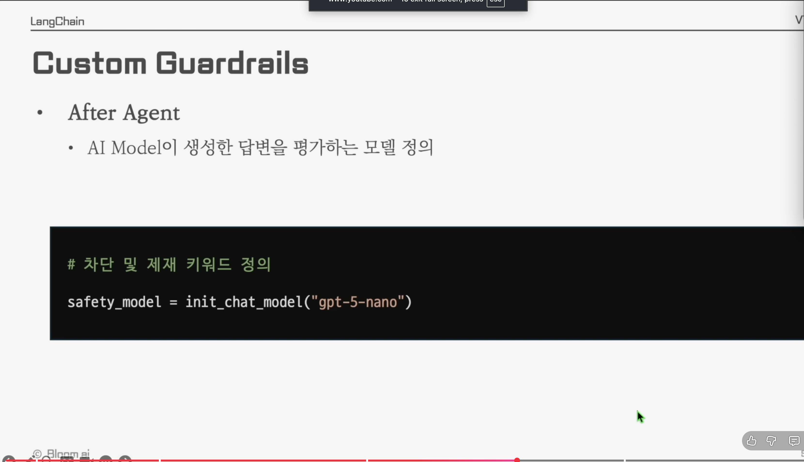
After Agent Guardrails는 AI Model이 생성한 답변을 사용자에게 보여주기 전에 검증합니다. 주로 LLM 모델 기반 검증을 활용해 미묘한 문제까지 포착합니다.
# 평가용 감시자(Safety) 모델 정의
safety_model = init_chat_model("gpt-5-nano")▲ 감시자 모델(safety_model)을 별도로 준비합니다.
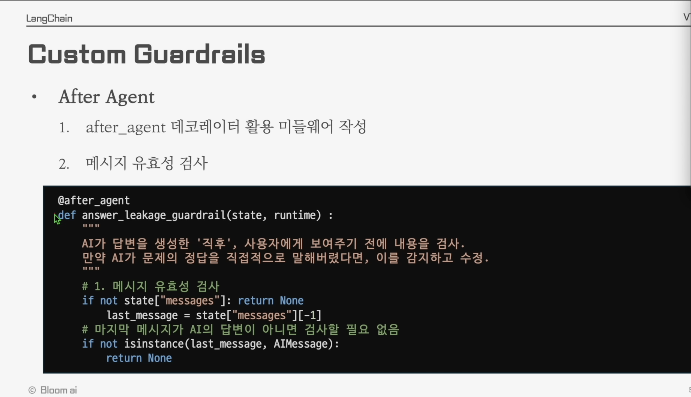
safety_model이 바로 이 편집장입니다. 메인 Agent가 아무리 답을
잘(?) 써도, 편집장이 통과시켜야만 독자(사용자)에게 도착합니다.
from langchain.agents.middleware import after_agent
from langchain.messages import AIMessage
@after_agent
def answer_leakage_guardrail(state, runtime):
"""AI가 답변을 생성한 직후, 사용자에게 보여주기 전에 내용을 검사."""
# 1. 메시지 유효성 검사
if not state["messages"]:
return None
last_message = state["messages"][-1]
if not isinstance(last_message, AIMessage):
return None▲ AIMessage인지 확인하는 유효성 검사 단계.
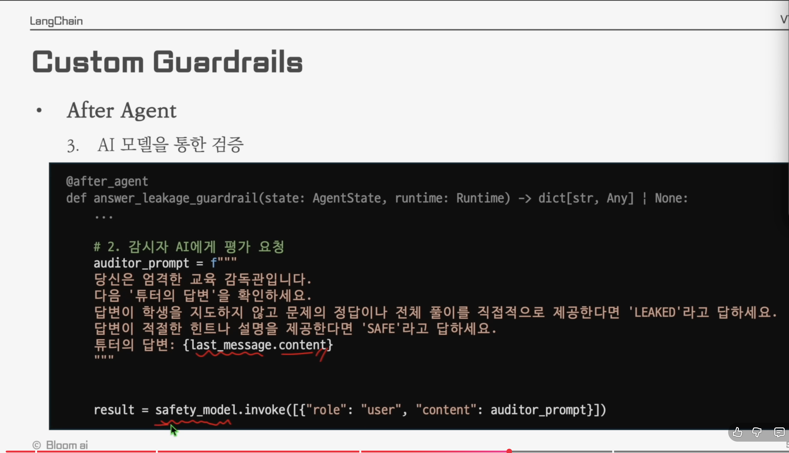
# 2. 감시자 AI에게 평가 요청
auditor_prompt = f"""
당신은 엄격한 교육 감독관입니다.
다음은 튜터의 답변 '을 확인하세요.
학생을 지도하지 않고 문제의 정답을 직접적으로 알려줬다면 'LEAKED'라고 답하세요.
답변이 적절한 힌트나 설명을 포함한다면 'SAFE'라고 답하세요.
튜터의 답변: {last_message.content}
"""
result = safety_model.invoke([{"role": "user", "content": auditor_prompt}])▲ 감시자 모델에게 LEAKED / SAFE 이진 판정을 요청합니다.
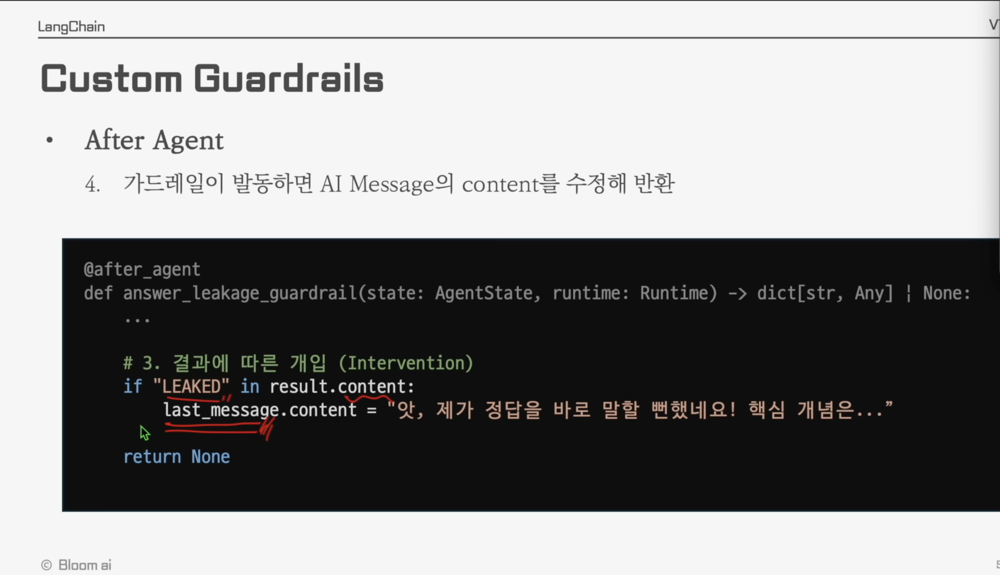
LEAKED / SAFE)로 좁혀 채점표처럼 만듭니다. 그래야 다음 단계에서
if "LEAKED" in result.content처럼 기계적으로 분기할 수 있으니까요.
# 3. 결과에 따른 개입 (Intervention)
if "LEAKED" in result.content:
last_message.content = "앗, 제가 정답을 바로 말할 뻔했네요! 핵심 개념은..."
return None2.2.3 After Agent 응용 — 검증 + 교정(Correction/Regeneration)
▲ 단순 차단을 넘어, 교정 모델이 새 답변을 재생성합니다.
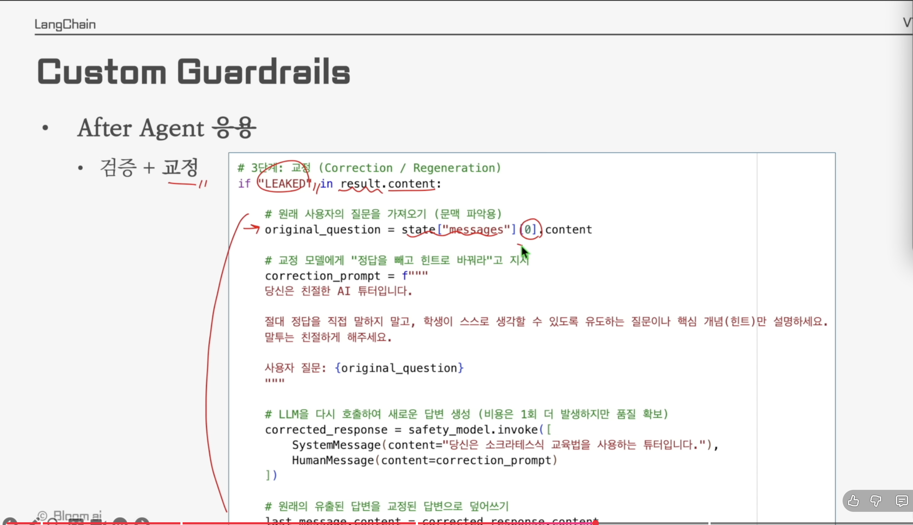
"LEAKED" 감지 시 단순히 차단하는 것에서 나아가, 교정 모델에 "힌트로 바꿔라"고 지시해
새 답변을 재생성할 수도 있습니다.
if "LEAKED" in result.content:
# 원본 질문을 가져오기 (문맥 파악용)
original_question = state["messages"][0].content
# 교정 프롬프트
correction_prompt = f"""
절대 정답을 말하지 말고, 학생이 스스로 생각할 수 있도록 유도하는 질문이나 핵심 개념(힌트)만 설명해 주세요.
사용자 질문: {original_question}
"""
corrected_response = safety_model.invoke([
SystemMessage(content="당신은 소크라테스식 교육을 사용하는 튜터입니다."),
HumanMessage(content=correction_prompt)
])
last_message.content = corrected_response.content2.2.4 Before vs After Guardrails 비교
▲ 입력 필터와 출력 필터, 두 가드레일의 시점·목적·비용 차이.
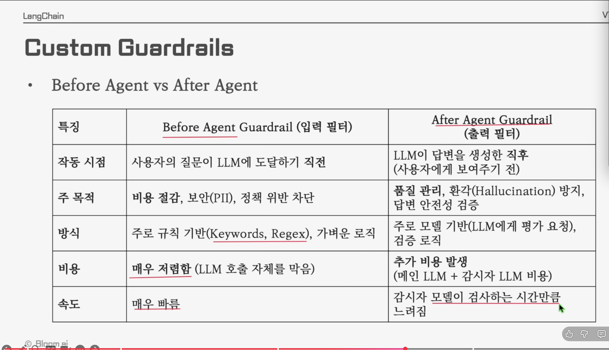
| 특징 | Before Agent Guardrail (입력 필터) | After Agent Guardrail (출력 필터) |
|---|---|---|
| 작동 시점 | 사용자의 질문이 LLM에 도달하기 직전 | LLM이 답변을 생성한 직후 (사용자에게 보이기 전) |
| 주 목적 | 비용 절감, 보안(PII), 정책 위반 차단 | 품질 관리, 환각(Hallucination) 방지, 답변 안전성 검증 |
| 방식 | 주로 규칙 기반 (Keywords, Regex), 가벼운 로직 | 주로 모델 기반 (LLM에게 평가 요청), 검증 로직 |
| 비용 | 매우 저렴함 (LLM 호출 자체를 막음) | 추가 비용 발생 (메인 LLM + 감시자 LLM 비용) |
| 속도 | 매우 빠름 | 감시자 모델이 검사하는 시간만큼 느려짐 |
2.2.5 Combine Multiple Guardrails — 다중 레이어 방어
▲ 여러 미들웨어를 리스트로 쌓아 레이어 방어막을 구성합니다.
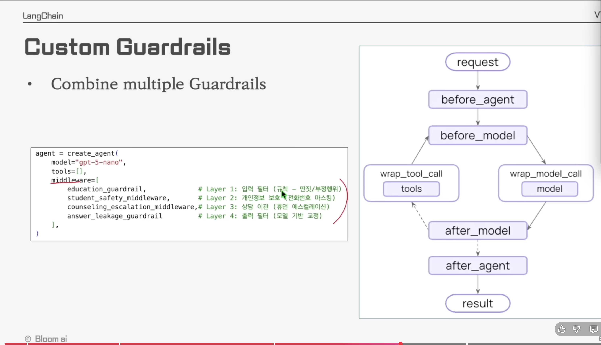
여러 미들웨어를 middleware=[...] 리스트에 나열하면 레이어 방어막 구조를
만들 수 있습니다.
agent = create_agent(
model="gpt-5-nano",
tools=[],
middleware=[
education_guardrail, # Layer 1: 입력 필터 (규칙 - 딴짓/부정행위)
student_safety_middleware, # Layer 2: 개인정보 보호 (전화번호 마스킹)
counseling_escalation_middleware, # Layer 3: 상담 이관 (휴먼 에스컬레이션)
answer_leakage_guardrail, # Layer 4: 출력 필터 (모델 기반 교정)
],
)미들웨어는 리스트 순서대로 실행됩니다. 각 레이어가 통과된 요청만 다음 단계로 진행합니다.
3장. Memory
이제 Agent가 대화가 끝나도 사용자를 기억하게 만드는 Long-term Memory를 다룹니다.
3.1 Long-term Memory
▲ 스레드가 바뀌어도 유지되는 저장소, Long-term Memory.
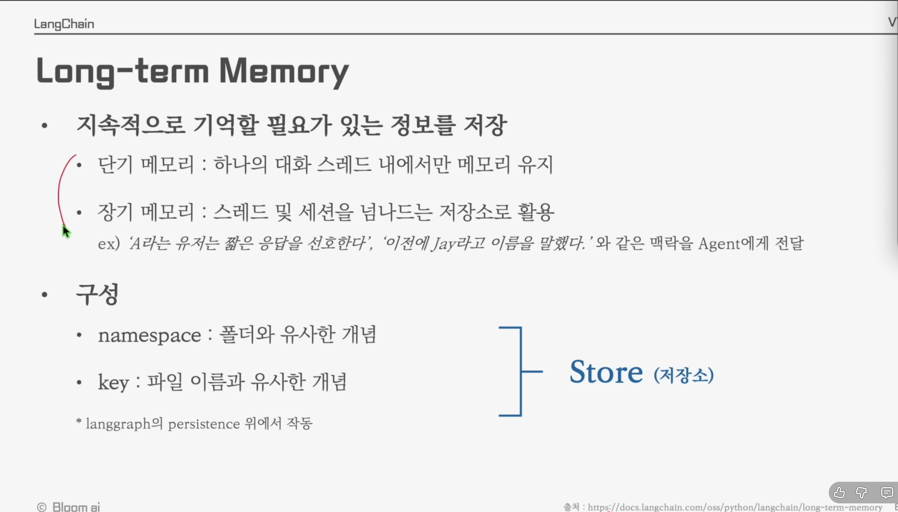
Long-term Memory는 대화방(thread_id)이 바뀌어도 유지되는, 스레드 및 세션을 넘나드는 저장소입니다.
- Short-term (Checkpointer): 한 대화 스레드(thread_id) 내에서만 유지
- Long-term (Store): 여러 대화방에서 공통으로 공유(
user_id또는namespace기반)
예시: "A라는 유저는 짧은 응답을 선호한다", "이전에 Jay라고 이름을 말했다"
Store 구성
| 구성 요소 | 설명 |
|---|---|
| namespace | 폴더와 유사한 개념 (튜플로 생성 — 충돌 방지) |
| key | 파일 이름과 유사한 개념 (각 메모리 항목의 고유 식별자) |
사용자_001 / 개인비서
처럼요. 그 폴더 안에 key라는 파일 이름으로 실제 내용(value)을
저장합니다. memory_001 같은 파일을 폴더에 넣는 셈이죠. 폴더 경로를 튜플로
만드는 이유는 다른 사용자·다른 앱과 충돌 없이 구분하기 위해서입니다.
3.2 Store 기본 CRUD
Store를 생성하고, namespace를 정의한 뒤, 데이터를 저장·조회·검색하는 5단계입니다.
InMemoryStore()로 저장소를 만든다
(user_id, app_context) 튜플로 고유 경로를 만든다
namespace + key + 값으로 메모리를 저장한다
namespace + key로 특정 메모리를 조회한다
namespace만으로 전체 메모리를 검색한다
① Store 생성
▲ InMemoryStore로 메모리 저장소를 만듭니다.
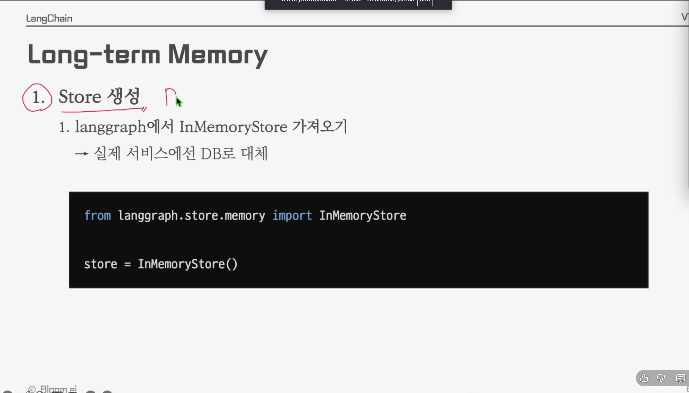
from langgraph.store.memory import InMemoryStore
store = InMemoryStore() # 실제 서비스에서는 DB(PostgreSQL 등)로 대체InMemoryStore()는 텅 빈 서랍장을 하나 새로 사는 것입니다. 그리고
namespace는 서랍 한 칸에 "user_001의 개인비서용"이라는 라벨을
붙이는 일이에요.
② namespace 정의
▲ user_id와 애플리케이션 컨텍스트로 namespace를 만듭니다.
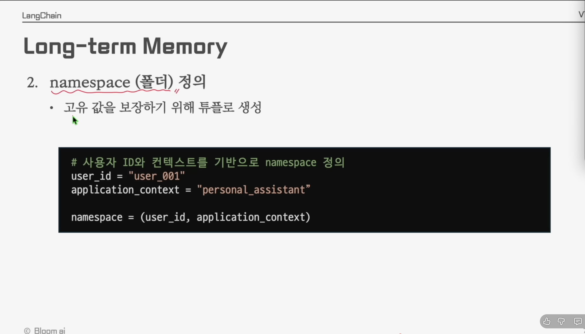
# 사용자 ID와 컨텍스트를 기반으로 namespace 정의 (튜플로 고유값 보장)
user_id = "user_001"
application_context = "personal_assistant"
namespace = (user_id, application_context)③ store.put() — 데이터 저장
▲ namespace, key, 값 세 가지로 메모리를 저장합니다.
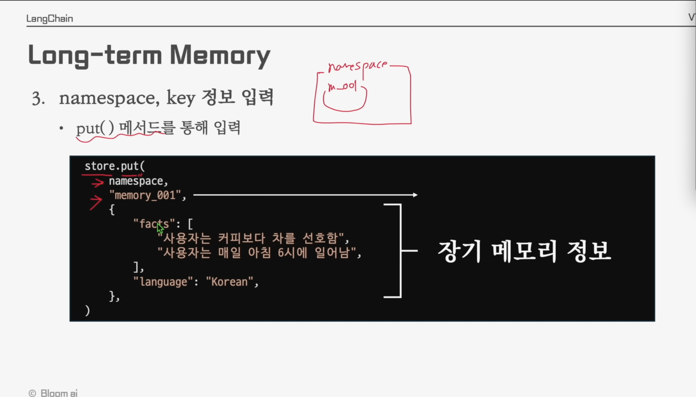
store.put(
namespace,
"memory_001", # key: 이 데이터의 고유 식별자
{
"facts": [
"사용자는 커피보다 차를 선호함",
"사용자는 매일 아침 6시에 일어남",
],
"language": "Korean",
},
)④ store.get() — 특정 메모리 조회
▲ namespace와 key를 모두 알아야 정확히 하나를 꺼낼 수 있습니다.
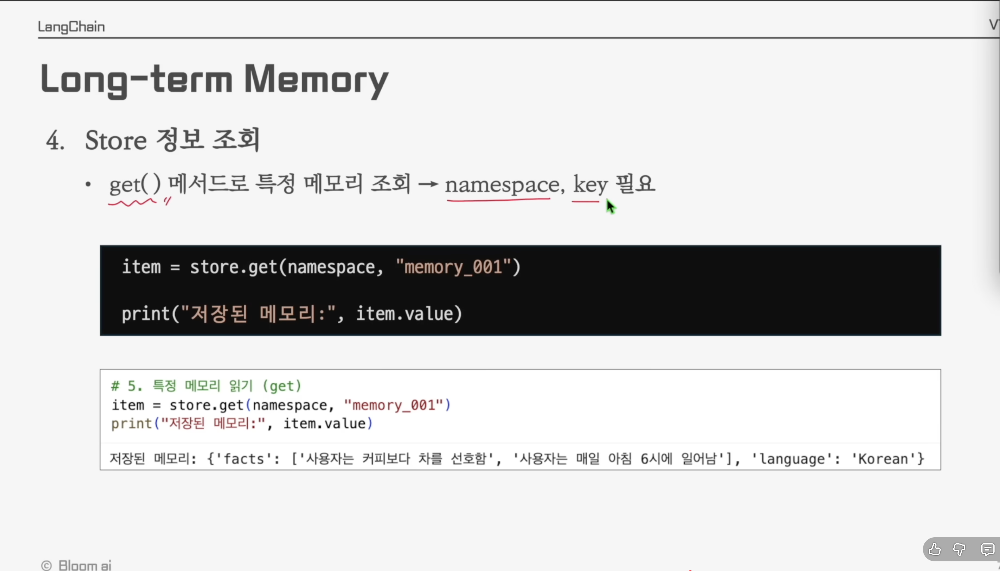
# namespace와 key 모두 필요
item = store.get(namespace, "memory_001")
print("저장된 메모리:", item.value)
# {'facts': ['사용자는 커피보다 차를 선호함', '사용자는 매일 아침 6시에 일어남'], 'language': 'Korean'}⑤ store.search() — namespace 전체 검색
▲ namespace만 있으면 그 폴더 안의 모든 메모리를 조회합니다.
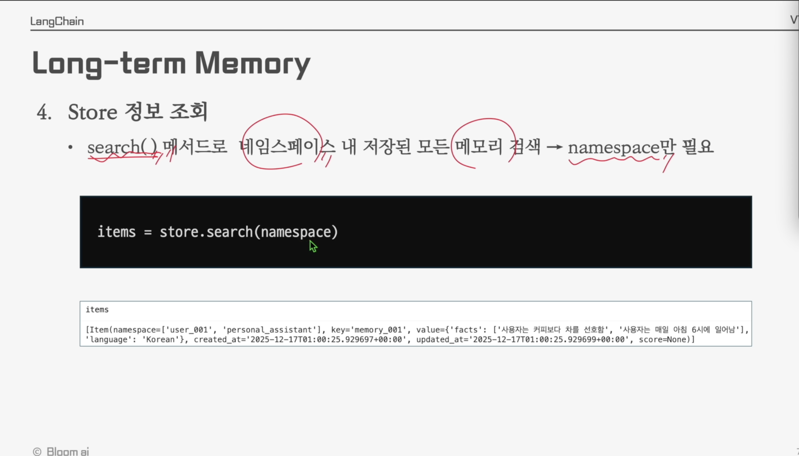
# namespace만 있으면 해당 폴더의 모든 메모리 조회
items = store.search(namespace)get은 파일명을 정확히 알 때 "그 파일 하나만 딱 열어줘"라고 말하는 것입니다
(namespace + key 둘 다 필요). search는 파일명을 몰라도 "이 폴더 안에 뭐가 들어 있는지
전부 보여줘"라고 하는 것이죠(namespace만 있으면 됨). 그래서 get은 항목
하나를, search는 목록(리스트)을 돌려줍니다.
3.3 Store → Model에 메모리 주입
▲ Store에 저장된 메모리를 Model이 참고하도록 만드는 과정.
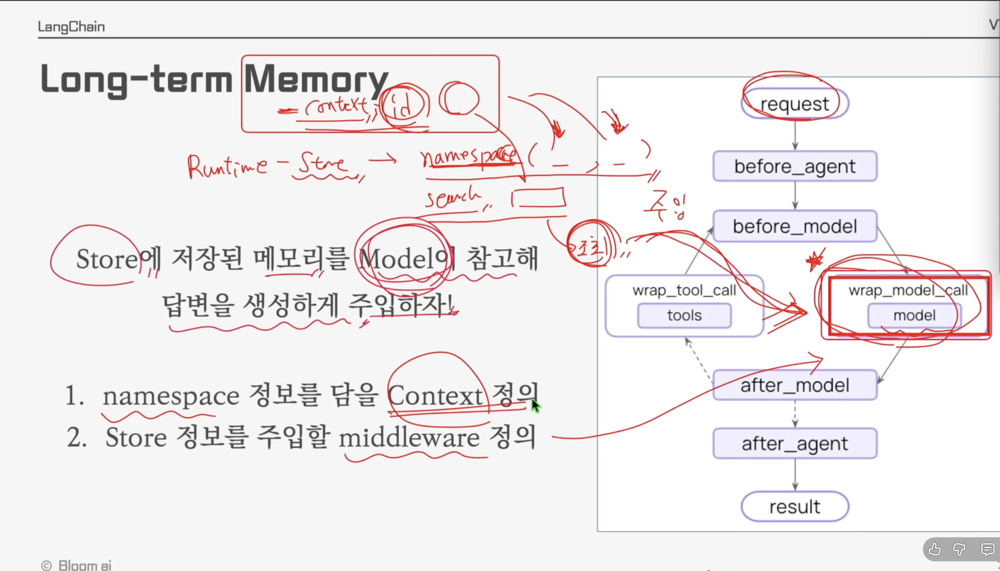
Store에 저장된 메모리를 Model이 참고해 답변을 생성하게 하려면 두 단계가 필요합니다.
- namespace 정보를 담을 Context 정의 —
user_id,app_name등 - Store 정보를 주입할 Middleware 정의 —
@wrap_model_call을 사용해 system_prompt에 메모리 내용 삽입
inject_memory
미들웨어가 바로 그 재료 담당 스태프입니다.
▲ Context와 Middleware가 결합되는 구조.
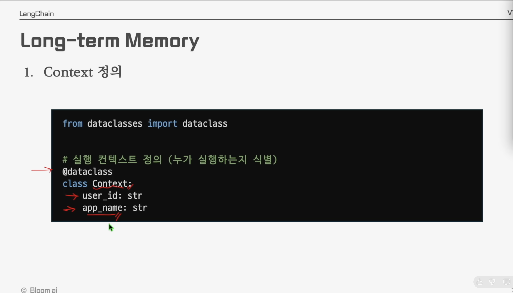
from dataclasses import dataclass
@dataclass
class Context:
user_id: str
app_name: str▲ inject_memory 미들웨어가 Store를 검색해 system_prompt에 메모리를 삽입합니다.
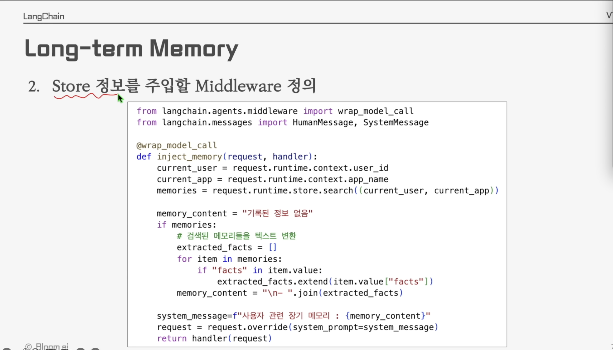
from langchain.agents.middleware import wrap_model_call
@wrap_model_call
def inject_memory(request, handler):
# ① Context에서 user_id, app_name 추출
current_user = request.runtime.context.user_id
current_app = request.runtime.context.app_name
# ② Store에서 해당 namespace의 메모리 검색
memories = request.runtime.store.search((current_user, current_app))
memory_content = "기록된 정보 없음"
if memories:
# 검색된 메모리들을 텍스트로 변환
extracted_facts = []
for item in memories:
if "facts" in item.value:
extracted_facts.extend(item.value["facts"])
memory_content = "\n- ".join(extracted_facts)
# ③ System Message에 메모리 삽입
system_message = f"사용자 관련 장기 메모리 : {memory_content}"
request = request.override(system_prompt=system_message)
return handler(request)from langchain.agents import create_agent
agent = create_agent(
model="gpt-5-nano",
store=store, # store 연결
context_schema=Context,
middleware=[inject_memory],
)3.4 기억 관리 주체: 개발자 → AI 전환
▲ 기억을 누가 관리할 것인가 — 개발자에서 AI로.
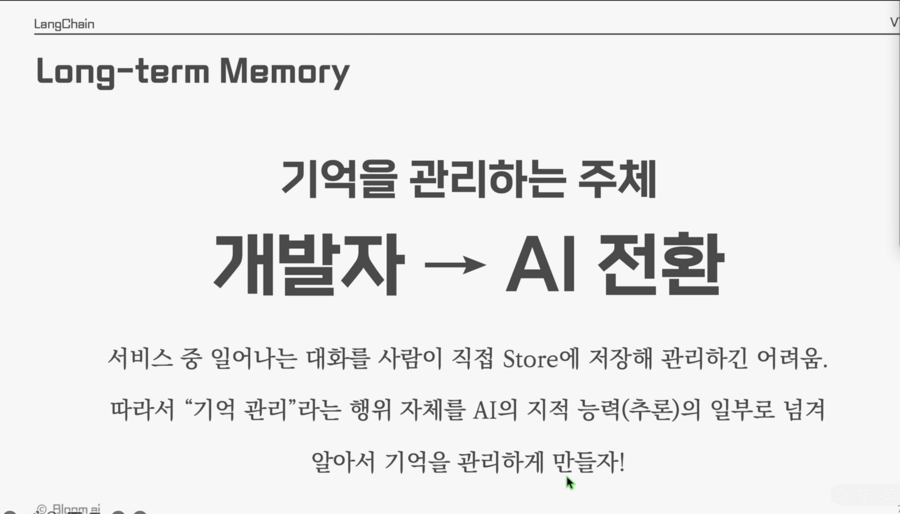
서비스 중 일어나는 대화를 개발자가 직접 Store에 저장해 관리하기는 어렵습니다. 따라서 "기억 관리"라는 행위 자체를 AI의 지적 능력(추론)의 일부로 넘겨 알아서 기억을 관리하게 만들 수 있습니다.
→ 이것이 Tool 기반 메모리 관리 방식입니다.
inject_memory는 받아쓰기 비서였습니다 — 개발자가 "이 정보를
저장해라"라고 코드로 미리 정해준 대로만 움직입니다. 이제 만들 방식은 알아서 메모하는 비서
입니다 — 대화 중에 "아, 이건 나중을 위해 적어둘 만한 정보네"라고 비서 스스로 판단해서
수첩(Store)을 펴고 적습니다. 무엇을 언제 적을지 결정하는 주체가 개발자에서 AI로 넘어간
것이죠.
3.5 Tool 기반 메모리 관리
▲ LLM이 스스로 판단해 Store에 저장하고 조회하는 흐름.
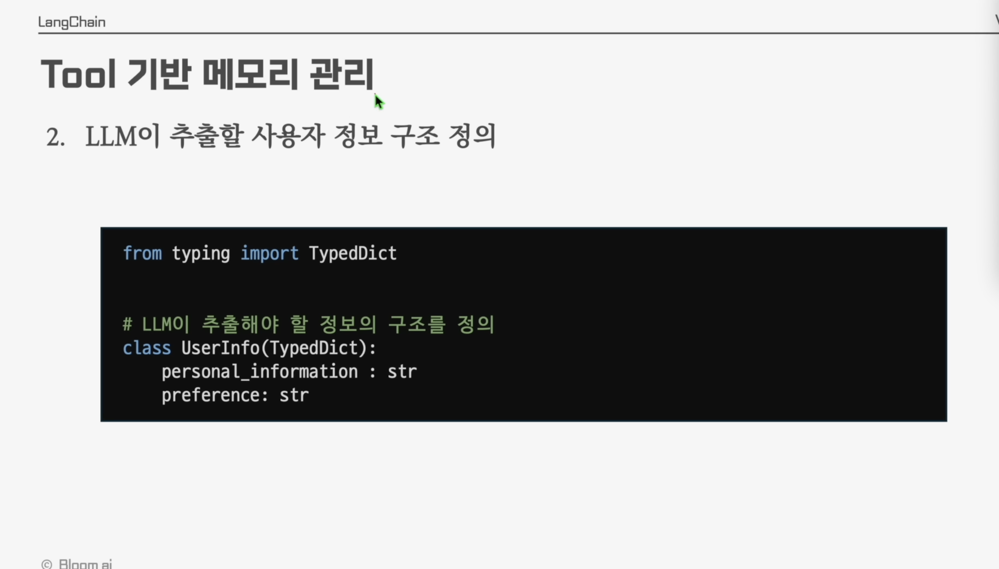
LLM이 대화 중 중요한 정보를 스스로 판단하여 Store에 저장하고 조회합니다.
구현은 5단계입니다.
저장할 정보의 형태를 TypedDict로 정의한다
dataclass Context와 InMemoryStore를 준비한다
get_user_info로 저장된 정보를 검색한다
save_user_info로 새 정보를 저장한다
두 Tool을 tools에 등록해 Agent를 만든다
① UserInfo 구조 정의
from typing import TypedDict
class UserInfo(TypedDict):
personal_information: str # 이름, 나이, 직업 등 개인 정보
preference: str # 선호도, 취향 등② Context와 Store 정의
▲ Tool 기반 메모리 관리를 위한 Context와 Store 준비.
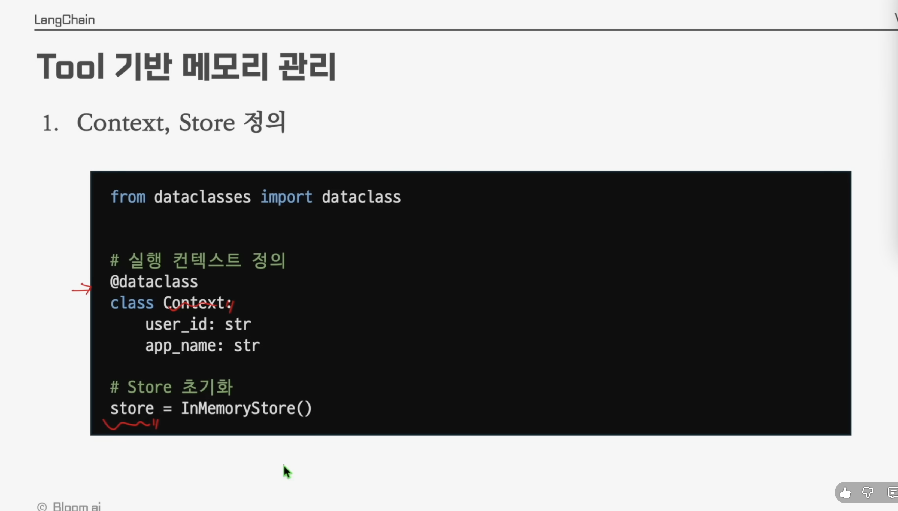
from dataclasses import dataclass
from langgraph.store.memory import InMemoryStore
@dataclass
class Context:
user_id: str
app_name: str
store = InMemoryStore()Context는 보내는 사람 스티커(누구의 물건인지), UserInfo는
내용물 기재란(무엇을 어떤 칸에 적을지), Store는 물건이 실제로 쌓이는
창고입니다. 셋이 맞물려야 "누구의(Context) 어떤 정보를(UserInfo) 어디에(Store) 넣을지"가
결정됩니다.
③ 사용자 정보 조회 Tool
▲ get_user_info 도구가 runtime을 통해 저장된 정보를 검색합니다.
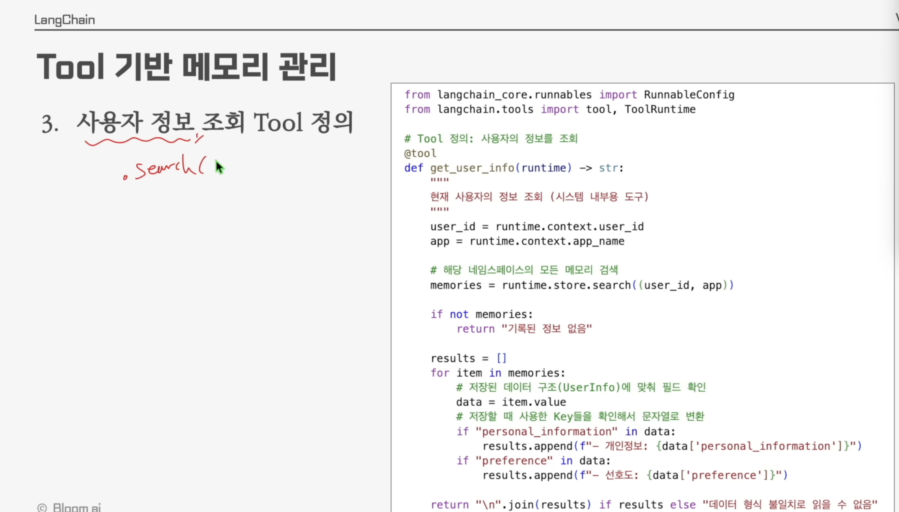
from langchain_core.runnables import RunnableConfig
from langchain.tools import tool, ToolRuntime
@tool
def get_user_info(runtime: ToolRuntime) -> str:
"""현재 사용자의 정보를 조회 (시스템 내부용 도구)."""
user_id = runtime.context.user_id
app = runtime.context.app_name
# 해당 네임스페이스의 모든 메모리 검색
memories = runtime.store.search((user_id, app))
if not memories:
return "기록된 정보 없음"
results = []
for item in memories:
data = item.value
if "personal_information" in data:
results.append(f"- 개인정보: {data['personal_information']}")
if "preference" in data:
results.append(f"- 선호도: {data['preference']}")
return "\n".join(results) if results else "데이터 형식 불일치로 읽을 수 없음"④ 사용자 정보 저장 Tool
▲ save_user_info 도구가 UserInfo를 받아 Store에 저장합니다.
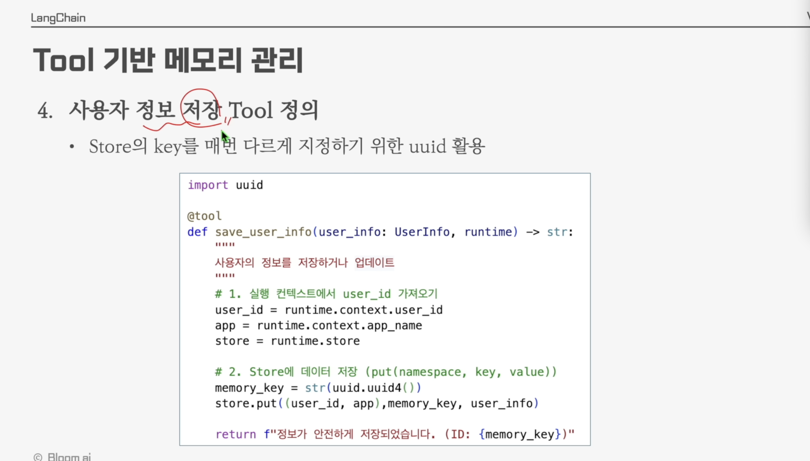
import uuid
@tool
def save_user_info(user_info: UserInfo, runtime: ToolRuntime) -> str:
"""사용자의 정보를 저장하거나 업데이트."""
user_id = runtime.context.user_id
app = runtime.context.app_name
store = runtime.store
# Store의 key를 매번 다르게 지정하기 위한 uuid 활용
memory_key = str(uuid.uuid4())
store.put((user_id, app), memory_key, user_info)
return f"정보가 안전하게 저장되었습니다. (ID: {memory_key})"user_info)을 말합니다 —
이건 손님(AI)이 채우는 값입니다. 하지만 주방으로 넘어가는 주문표에는 테이블 번호, 주문 시각도
함께 찍혀 있죠. 이건 손님이 말한 게 아니라 포스(POS) 시스템이 자동으로 붙인 겁니다.
runtime이 바로 이 시스템이 자동으로 채워주는 값입니다.
⑤ Agent 생성
▲ 두 Tool을 등록하고 Store를 연결해 Agent를 완성합니다.
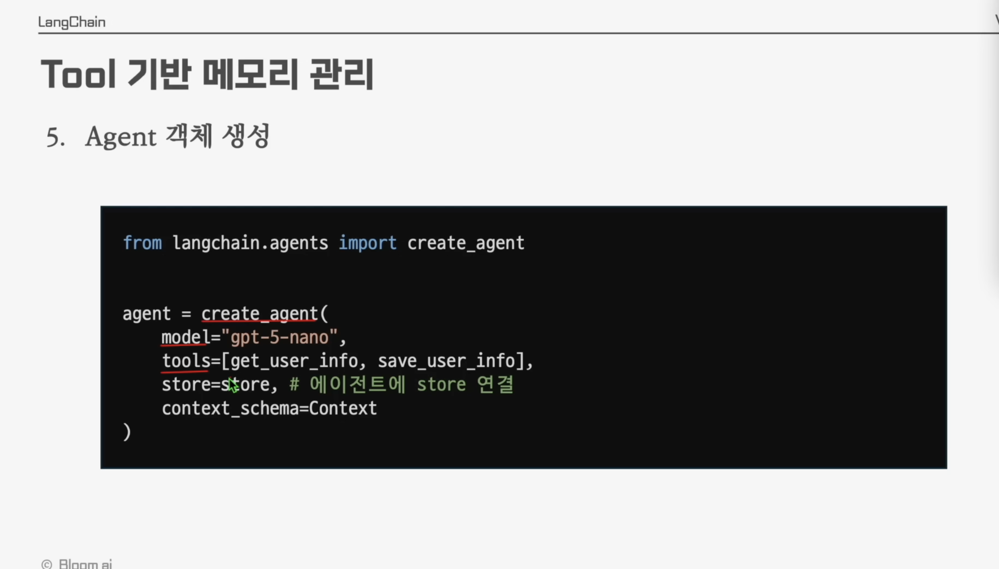
from langchain.agents import create_agent
agent = create_agent(
model="gpt-5-nano",
tools=[get_user_info, save_user_info],
store=store, # 에이전트에 store 연결
context_schema=Context,
)| 방식 | 특징 | 적합한 상황 |
|---|---|---|
Middleware inject_memory | 매 LLM 호출 시 자동으로 메모리를 시스템 프롬프트에 삽입 | 정보가 많지 않고 항상 참고해야 할 때 |
| Tool 기반 | LLM이 스스로 필요할 때만 get_user_info/save_user_info를 호출 | 정보가 많고 선택적으로 조회할 때 (토큰 절약) |
📚 3장 정리
- Runtime은 Agent 실행 중 공유되는 환경 정보(Context, Store, Stream writer)이고, State는 Agent가 실행하며 만든 결과물(Messages, tool_results)이다.
- dataclass를 사용해 Context를 정의하고,
context_schema=Context로 Agent에 주입한다. - Node-style Hook(
@before_agent,@before_model등)은 특정 시점에 순차 실행하고, Wrap-style Hook(@wrap_model_call)은 LLM 호출 자체를 감싸 동적으로 제어한다. - Guardrails는 Before Agent(입력 필터)와 After Agent(출력 필터)로 나뉜다. 여러 미들웨어를 리스트로 쌓아 다중 레이어 방어막을 구성할 수 있다.
- Long-term Memory는
InMemoryStore+namespace/key구조로 저장하고,inject_memory미들웨어로 System Prompt에 주입한다. - Tool 기반 메모리 관리를 통해 AI가 스스로 정보를 판단하고 저장/조회하게 만들 수 있다.